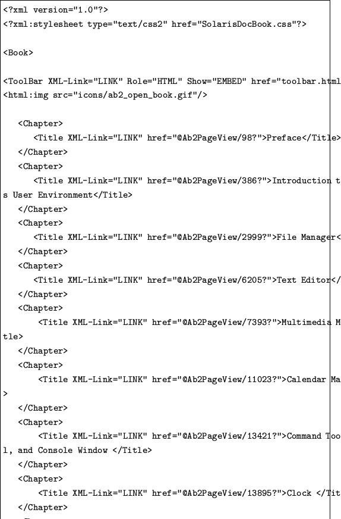

<!DOCTYPE HTML PUBLIC "-//W3C//DTD HTML 3.2 Final//EN">
<!-- Converted with jLaTeX2HTML 98.1p1 release (March 2nd, 1998) + JP patch 2.0 (March 16th, 1998)
patched by Kenshi Muto (mutou@three-a.co.jp), Three-A Systems,Co.,Ltd.
LaTeX2HTML 98.1p1 release (March 2nd, 1998)
originally by Nikos Drakos (nikos@cbl.leeds.ac.uk), CBLU, University of Leeds
* revised and updated by:  Marcus Hennecke, Ross Moore, Herb Swan
* with significant contributions from:
  Jens Lippmann, Marek Rouchal, Martin Wilck and others  -->
<HTML>
<HEAD>
<TITLE>XML$BJ8=q(B</TITLE>
<META NAME="description" CONTENT="XML$BJ8=q(B">
<META NAME="keywords" CONTENT="mozilla">
<META NAME="resource-type" CONTENT="document">
<META NAME="distribution" CONTENT="global">
<META HTTP-EQUIV="Content-Type" CONTENT="text/html; charset=iso-2022-jp">
<LINK REL="STYLESHEET" HREF="mozilla.css">
<LINK REL="next" HREF="node7.html">
<LINK REL="previous" HREF="node5.html">
<LINK REL="up" HREF="node5.html">
<LINK REL="next" HREF="node7.html">
</HEAD>
<BODY >
<!-- Navigation Panel -->
<A NAME="tex2html81"
 HREF="node7.html">
</A> 
<A NAME="tex2html79"
 HREF="node5.html">
</A> 
<A NAME="tex2html73"
 HREF="node5.html">
</A>   
<BR>
<STRONG> Next:</STRONG> <A NAME="tex2html82"
 HREF="node7.html">RDF $B%G!<%?Nc(B</A>
<STRONG> Up:</STRONG> <A NAME="tex2html80"
 HREF="node5.html">$BNc(B</A>
<STRONG> Previous:</STRONG> <A NAME="tex2html74"
 HREF="node5.html">$BNc(B</A>
<BR>
<BR>
<!-- End of Navigation Panel -->

<H2><A NAME="SECTION00051000000000000000">
XML$BJ8=q(B</A>
</H2>

<P>
$B<B:]$K(B<TT>http://docs.sun.com/mozilla/TocView.xml</TT>
$B$N(BXML$BJ8=q$r(BMozilla$B$GI=<($7$?:]$N%&%#%s%I%&$r?^(B4$B$K<($9!#(B

<P>
$B$3$N(B<TT>TocView.xml</TT>$B$NFbMF$N%j%9%H$rIUO?$H$7$FE:IU$7$?!#(B
$B$^$?!"(BXML$BJ8=qCf$G;XDj$5$l$F$$$k(BCSS$B%U%!%$%k$bE:IU$9$k!#(B

<P>
<TT>TocView.xml</TT>$B$NFbMF!'(B
<BR>
<BR>

<BR>
<P>
<BR>
<BR>
<TT>SolarisDocBook.css</TT>$B$NFbMF!'(B
<BR>
<BR>

<BR>
<P>
<BR>
<BR><HR><P></P>
  <DIV ALIGN="CENTER">
file=TocView.ps,width=15cm
<BR>
   <FONT SIZE="-1">$B?^(B4 : XML$BJ8=q$NI=<(Nc(B</FONT>
  </DIV>
<BR><HR>
<BR>
<BR>

<P>
<BR><HR>
<ADDRESS>
Masao Takaku
$BJ?@.(B11$BG/(B3$B7n(B11$BF|(B
</ADDRESS>
</BODY>
</HTML>
